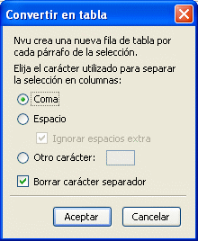
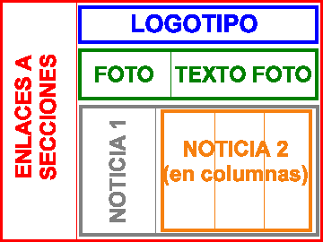
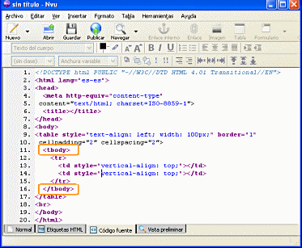
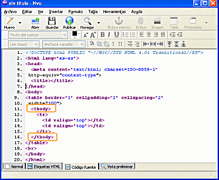
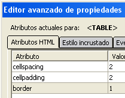
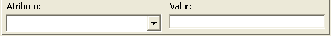

Departamento de Tecnología

Profesor 1. Jefe de Departamento
Profesor 2
Curso 1º ESO. materia 1
Curso 2º ESO. materia 2
Curso 3º ESO. materia 2
No modificar nada a partir de aquí
IMPORTANTE: La mayoría de las modificaciones, tales como el cambio de altura o anchura o la alineación del texto no se aplicarán correctamente cuando se esté trabajando con CSS activado.
Podemos especificar una anchura o altura para la celda, tanto de forma absoluta (en píxeles) como relativa (respecto a la tabla en la que se encuentra).
Si elegimos en la sección de podemos encontrarnos con efectos indeseables, ya que se extenderá la anchura de la celda para contener el texto en el mismo renglón.
El comportamiento por defecto de las tablas es que se intenta repartir el espacio correspondiente a cada columna de acuerdo al contenido de las mismas, por lo que es muy conveniente que marquemos la casilla de verificacion de la sección
En cuanto a los colores de fondo se especificarían
igual que lo hacíamos al definir los colores de fondo de la
tabla en general o de la propia página.
Para todos aquellos atributos que puedan entrar en conflicto el orden de prioridad va siempre de lo particular a lo general, dando preferencia según el orden:
Así, el color de la celda se superpondrá al de la fila y éste, a su vez, al de la tabla.
Como ves existen bastantes atributos de las etiquetas que se utilizan para crear las tablas, pero una vez que sabemos crear la estructura básica habrá que ir comprobando cómo se modifica el resultado final dependiendo de las variaciones que se hagan.
Si acudes al menú es posible que te llame la atención el comportamiento de las opciones para unir o dividir celdas:
 al
hacer clic sobre cada una de ellas, aparecerá la
opción
al
hacer clic sobre cada una de ellas, aparecerá la
opción Como ves el trabajo con las celdas de una tabla presenta algunas diferencias si lo comparamos con la forma de hacer una tarea similar en un procesador de texto,
En ocasiones puedes encontrarte con un documento que contenga ya una serie de datos ordenados que nos conviene organizar en forma de tabla.
La única condición es que exista un
separador claro que nos permita establecer las columnas de la tabla.
Cumpliéndose estas condiciones bastará
con seleccionar el texto que deseamos convertir en tabla y elegir la
opción de menú tabla indicando en el panel
cuál es el caracter separador y si deseamos o no que se
elimine ese caracter al crear la tabla.
indicando en el panel
cuál es el caracter separador y si deseamos o no que se
elimine ese caracter al crear la tabla.
Cada salto de renglón se interpretará como un salto de fila. La aplicación más evidente es la de convertir la lista de clase o el listado del claustro en una tabla.
Crear una tabla a partir de una lista de nombres y apellidos separados por comas. Por si no tienes a mano una lista puedes hacer la práctica con ésta
Prueba la diferencia entre señalar la coma o el espacio como carácter separador.
Guarda el trabajo como actividad25.html
En ocasiones, especialmente cuando utilizamos las tablas como recurso de formato para distribuir la información dentro de la página, nos interesa introducir una tabla dentro de una celda perteneciente a una tabla creada anteriormente. Esto nos permitirá, por ejemplo, hacer que convivan tablas con borde junto a tablas sin borde.
Supongamos, por ejemplo, que estamos diseñando una página para introducir en ella los contenidos de una revista escolar. En la siguiente imagen podemos contemplar una posible estructura en la que vamos anidando sucesivas tablas.
Cada color corresponde a una tabla que incluye en su interior las que son de otro color diferente.

Posible estructura de una
página de revista electrónica
Como ya conocemos los códigos básicos que constituyen una tabla entenderemos rápidamente la estructura general. Para facilitar la interpretación se han recogido las etiquetas correspondientes a cada tabla con el mismo color con el que se presentan en el gráfico y se han ido sangrando las etiquetas correspondientes a cada tabla, de forma que se pueda ver con facilidad en qué celda se encuentra insertada cada una de ellas.
Introduciendo el texto correspondiente a cada zona de la hipotética pantalla obtendríamos una presentación coincidente con el ejemplo gráfico.
<table border=0>
<tr>
<td>Enlaces a
secciones</td>
<td>
<table border=0>
<tr>
<td>Logotipo
</td>
</tr>
</table>
<table border=0>
<tr>
<td>Foto
</td>
<td>Texto foto
</td>
</tr>
</table>
<table border=0>
<tr>
<td>Noticia 1
</td>
<td>
<table
border=0>
<tr>
<td>Noticia en
columnas </td>
<td>Columna 2
</td>
<td>Columna 3
</td>
</tr>
</table>
</td>
</tr>
</table>
</td>
</tr>
</table>
 A veces
los ojos nos engañan: prima la forma y pensamos que hay que
escribir en vertical, pero si te fijas en la muestra gráfica
que aparece antes del código de la tabla que se propone como
modelo verás que lo que se muestra no es una tabla, sino una
imagen que representa un posible esquema de una tabla. Lo mismo ocurre
con lo que se lee a la izquierda de este párrafo: aunque
podamos leerlo no es un texto, sino una imagen. ¿No te
había llamado también la atención que
una parte del texto se extendiera sobre tres columnas?
A veces
los ojos nos engañan: prima la forma y pensamos que hay que
escribir en vertical, pero si te fijas en la muestra gráfica
que aparece antes del código de la tabla que se propone como
modelo verás que lo que se muestra no es una tabla, sino una
imagen que representa un posible esquema de una tabla. Lo mismo ocurre
con lo que se lee a la izquierda de este párrafo: aunque
podamos leerlo no es un texto, sino una imagen. ¿No te
había llamado también la atención que
una parte del texto se extendiera sobre tres columnas?
No se puede escribir en
vertical en HTML. Si quieres que
parezca así tendrás que crear una imagen e
insertarla en tu página.
Las tablas pueden ser un recurso para organizar el espacio de una página, pero tienen algun inconveniente como, por ejemplo, que una tabla sólo se muestra cuando se ha cargado completamente.
Debido a la característica que acabo de comentar , si se utilizan tablas para posicionar elementos, es conveniente que busques la manera de subdividir el contenido de forma que lo puedas incluir en varias tablas independientes. Para el visitante la sensación visual no tiene por qué variar, pero habrás conseguido que la página se cargue con mayor rapidez que si todo el contenido se sitúa dentro de la misma tabla.
Hay, además, una cuestión muy importante desde el punto de vista de los contenidos: la utilización de las tablas como elemento de diseño pervierte su verdadera funcionalidad que tiene que ver con la estructuración de los datos y no con la apariencia gráfica. La alternativa para posicionar elementos en la página es la utilización de las hojas de estilo, de forma que los datos que forman el contenido queden separados de la apariencia con la que se mostrarán en la pantalla.
A continuación se propone un ejercicio de investigación sobre la aplicación de las tablas. Es posible que no seas capaz de encontrar una solución efectiva todavía, pero es interesante que te plantees su búsqueda.
|
Código de tabla con
estilos activados
|
Código de tabla con
estilos CSS desactivados
|
|---|---|
|

|

|
Como puedes ver en las
capturas de pantalla, tanto si tenemos
activada en las preferencias la utilización de estilos como
si la tenemos desactivada, cuando creamos una tabla aparece una
etiqueta que no habíamos mencionado hasta ahora:
<tbody> con su correspondiente
cierre. Esta etiqueta
forma parte de un grupo de tres con las que definimos la
cabecera, el cuerpo y el pie de una tabla, que permiten estructurar el
texto contenido en la misma y cubre varias finalidades:
Teniendo en cuenta lo anteriormente dicho, el código básico necesario para estructurar correctamente una tabla sería algo más amplio que lo que habíamos visto en un principio
<table>
Aquí se inicia la tabla
<thead>
Indica que se inician las filas de
cabecera con
sus correspondientes contenidos en cada celda. (No siempre tiene que
haber cabecera por lo que podría no existir)
<tr>
<th>Aunque
se podría utilizar la etiqueta <td> es
preferible que las celdas pertenecientes a la cabecera se denominen con
esta etiqueta ya que aplica automáticamente un formato
enfatizado que las diferencia visualmente de las celdas de contenido
normal.</th>
<th>...</th>
</tr>
</thead>
Indica el fin de la cabecera
<tbody>
Indica que se inician las filas que
contienen el
cuerpo de la tabla con sus correspondientes contenidos en cada celda.
(Este grupo sí que debería existir siempre aunque
no hubiera cabeceras o pies)
<tr>
<td>...</td>
<td>...</td>
</tr>
</tbody>
Indica el fin del cuerpo de la tabla
<tfoot>
Indica que se inician las filas de pie
con sus
correspondientes contenidos en cada celda. (Dependiendo de la
estructura de los datos es posible que no sea necesario que haya pie
por lo que podría no existir esta sección)
<tr>
<td>...</td>
<td>...</td>
</tr>
</tfoot>
Indica el fin de la zona
de pie.
</table>
Fin de la tabla
Cuando
hacemos un doble clic
sobre una tabla o cuando elegimos la opción de
menú tabla propiedades de la tabla
obtenemos una ventana en la que se nos muestran los códigos
correspondientes a los atributos que se han establecido por defecto. No
es más que un modo gráfico de mostrarnos los
códigos que veríamos en la pestaña  pero tiene la ventaja de que
nos permite tener una visión bastante ordenada sin tener que
localizarlos entre todos los componentes de la página.
pero tiene la ventaja de que
nos permite tener una visión bastante ordenada sin tener que
localizarlos entre todos los componentes de la página.

En la zona inferior disponemos de un desplegable que nos va a permitir seleccionar algunos atributos complementarios, ofreciéndonos en algunos caso los valores posibles cuando estos se hayan establecidos en las recomendaciones del W3C. Vamos a ver el significado de algunos de ellos porque pueden resultar muy interesantes de cara al diseño.
summary
(resumen) Es un atributo relacionado con la accesibilidad que permite
incluir un pequeño texto que resuma el contenido de la
tabla. Cuando un visitante llegue a la página y la lea con
un sistema acústico este interpretará el texto
como una introducción
a la tabla y lo leerá antes de proceder a la lectura del
contenido.
frame (marco)
permite especificar en qué lados de la tabla deben
ser añadidos bordes . Puede adoptar los siguientes valores:
frame="void" ( void
= nada ) no es
visualizado ningún borde exterior. Si se especifica un valor
border se ven las líneas de la cuadrícula,
apareciendo la tabla como una reja abierta por todos lados. frame="above" ( above
= superior )
solo se muestra la línea superior del borde. frame="below" ( below
= inferior )
solo se muestra la línea inferior del borde. frame="hsides" ( horizontal
sides = lados
horizontales ) son visualizadas tan sólo las
líneas superior e inferior. frame="vsides" (vertical
sides = lados verticales )
son visualizadas tan sólo las líneas laterales
del borde. frame="lhs" (left
hand side = lado izquierdo )
se muestra sólo la línea izquierda del borde. frame="rhs" ( right
hand side = lado derecho )
se muestra sólo la línea izquierda del borde. ver ejemplos del atributo frame
rules permite
especificar en la etiqueta de apertura <table>
las
líneas horizontales o reglas para las líneas de
la cuadrícula
( rules
= reglas ). Puede adoptar los siguientes valores:
rules="none" ( none
= ningún )
no son visualizadas las líneas de la cuadrícula,
el borde exterior de la tabla es sin embargo visualizado. rules="rows" ( rows
= filas ) son
visualizadas las líneas entre todos las filas de la tabla,
pero no las líneas entre las columnas de la tabla. rules="cols" ( cols
= columns = columnas )
son visualizadas todas las líneas entre todas las columnas
de la tabla, sin embargo no las líneas entre las filas. rules="groups" ( groups
= grupos )
son visualizadas todas las líneas entre la cabeza, cuerpo y
pie de una tabla rules="all" ( all
= todo ) son
visualizadas todas las líneas entre todas las celdas de la
tabla. Es el valor preajustado por lo que equivale a no utilizar este
atributo.ver ejemplos del atributo rules
hspace
(espacio horizontal) Permite especificar el espacio que
separará horizontalmente el texto exterior de los
límites de la tabla cuando ésta ocupe menos del
100% y se encuentre alineada a la izquierda o derecha de la
página. Es un atributo que ya está desaconsejado
aunque puede seguir utilizándose, (Internet Explorer no lo
considera)
vspace
(espacio vertical) Cumple la misma función que hspace
pero
aplicado a la distancia vertical.